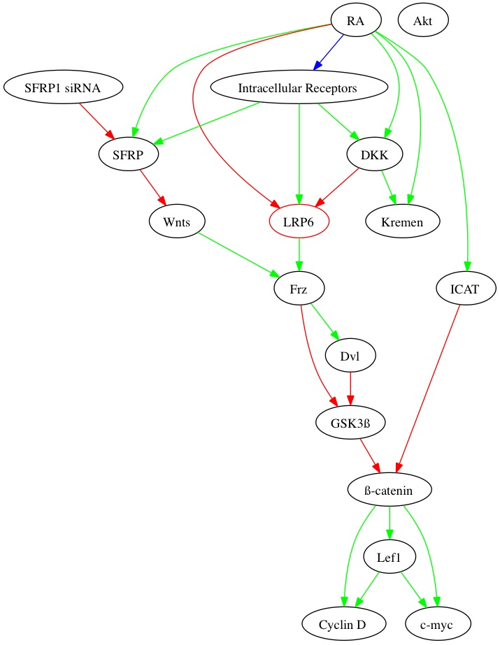

First time using SimLab? Take the tour!
Build simulation models of your signaling pathways and regulatory networks from data and based on your knowledge. Use SimLab's powerful engine to simulate experiments such as knockdowns and perturbations.
Build Your Model
List of nodes - Number of values
List the network/pathway nodes (i.e., genes, proteins, siRNA, ...)
List the corresponding possible values on the right. Values can be for example different levels (e.g., low/high or low/medium/high), different locations (nucleus, cytoplasm, membrane), or different levels of activity.
Regulatory links
Enter which nodes affect which other nodes. These regulatory links include transcriptional regulation (activation and inhibition), phosphorylation, transport. Press the refresh button to generate a wiring diagram of your network. To specify an interaction from protein A to protein B, write A->B", followed by a semicolon. This is case sensitive, so A->B; B->a; creates three nodes. If a node A affects both B and C, specify it as A->B; A->C;
Please us x1, ..., xn for your variables. Thanks.
Please us x1, ..., xn for your variables. Thanks.
Regulatory rules
Click on a node to specify its regulatory rules in the table.
Specify the combinatorial effect that the variables have on each other. For each variable, complete the transition table
Wiring Diagram

The Wiring Diagram helps you visualize the static relationship of the model. You can reload the wiring diagram to incorporate the changes you made in Regulatory links or Regulatory rules.
Experiment with Your Model
Dynamic Model Properties
The system has the following steady states:
Steady states are the stable attractors of a system